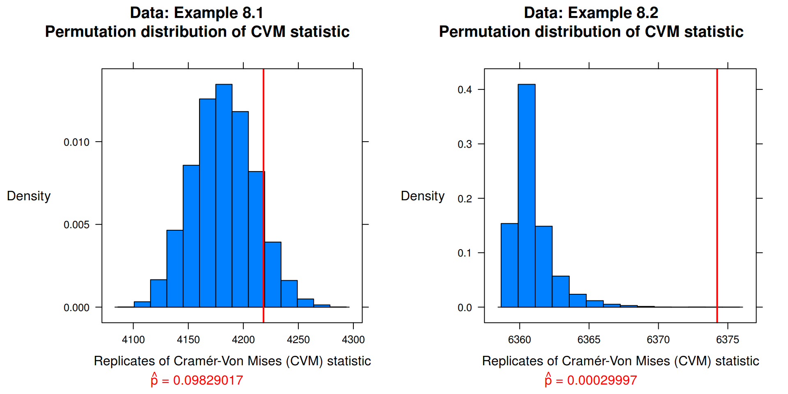

Chapter 2 Exercise 8.1
Implement the two-sample Cramér-von Mises test for equal distributions as a permutation test. Apply the test to the data in Examples 8.1 and 8.2.
Solution:
data("chickwts")
## Packages
library(latticeExtra)## Loading required package: lattice## Loading required package: RColorBrewer## function: two-sample Cramér-von Mises test for equal distributions
cvm <- function(x, y, data){
r <- 10000 # Permutation samples
reps <- vector("numeric", r)
n <- length(x)
m <- length(y)
v.n <- vector("numeric", n) # Replication vectors
v1.n <- vector("numeric", n)
v.m <- vector("numeric", m)
v1.m <- vector("numeric", m)
z <- c(x, y)
N <- length(z)
for (i in 1:n) v.n[i] <- ( x[i] - i )**2
for (j in 1:m) v.m[j] <- ( y[j] - j )**2
# Test statistic
reps_0 <- ( (n * sum(v.n) + m * sum(v.m)) / (m * n * N) ) -
(4 * m * n - 1) / (6 * N)
for (k in 1:r) { # Permautation samples
w <- sample(N, size = n, replace = FALSE)
x1 <- sort( z[ w] )
y1 <- sort( z[-w] )
for (i in 1:n) { v1.n[i] <- ( x1[i] - i )**2 }
for (j in 1:m) { v1.m[j] <- ( y1[j] - j )**2 }
reps[k] <- ( (n * sum(v1.n) + m * sum(v1.m)) / (m * n * N) ) -
(4 * m * n - 1) / (6 * N)
}
p <- mean( c(reps_0, reps) >= reps_0 )
return(
histogram(c(reps_0, reps) # Histogram
, type = "density"
, col = "#0080ff"
, xlab = "Replicates of Cramér-Von Mises (CVM) statistic"
, ylab = list(rot = 0)
, main = paste0(
"Data: ", data, "\n"
, "Permutation distribution of CVM statistic")
, sub = list(substitute(paste(hat(p), " = ",pvalue)
, list(pvalue = p))
, col = 2)
, panel = function(...){
panel.histogram(...)
panel.abline(v = reps_0, col = 2, lwd = 2)
})
)
}
## Data: Example 8.1
x <- with(chickwts, sort(as.vector(weight[feed == "soybean"])))
y <- with(chickwts, sort(as.vector(weight[feed == "linseed"])))
cvm_8.1 <- cvm(x, y, "Example 8.1")
## Data: Example 8.2
x <- with(chickwts, sort(as.vector(weight[feed == "sunflower"])))
y <- with(chickwts, sort(as.vector(weight[feed == "linseed"])))
cvm_8.2 <- cvm(x, y, "Example 8.2")
## Results
print(cvm_8.1, position = c(0, 0, .5, 1), more = TRUE)
print(cvm_8.2, position = c(.5, 0, 1, 1))